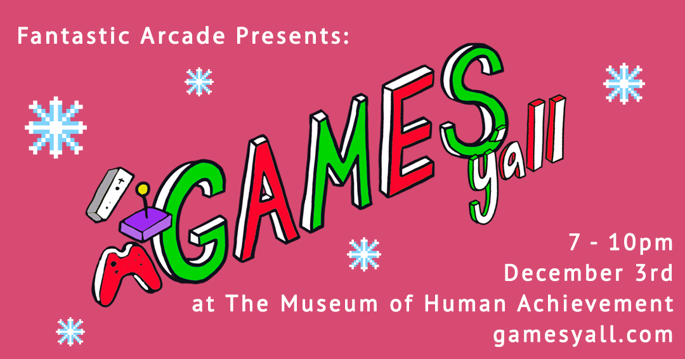

-
December Meetup
December 3, 2022 - 7-10pm
The Museum of Human Achievement, 3600 Lyons Road, Austin, TX 78702
Our final meetup of the year! No theme for December, just cool community submitted games, hot drinks, and holiday fun! Bring your friends, roommates, and co-workers (the ones you like!).
The Museum of Human Achievement hosted some friends at the MoHA 🚗 Drive-In from 6-10pm!
🎁 Holiday Market with The Mall
🔮 Bingo with Cindy Popp
🎥 Screenings of Welcome to the Dollhouse and Clueless
Games Y'all + Fantastic Arcade
Games Y’all is a meetup presented by Fantastic Arcade & The Museum of Human Achievement, held every month at venues around Austin for indie devs, digital artists, and games fans.
Fantastic Arcade celebrates, amplifies, and supports the unique and underrepresented within indie games and beyond.

Games This Month
Yoko Redux: Dreams of a Blue Planet
Yoko Redux: Dreams of a Blue Planet is driven by a rich, often cryptic, story as you control one of three main characters over the course of seven immersive chapters. The story takes you down the paths of Locke, Jeanne and Primus in a world just waiting to be discovered and cracked open.
Follow along on a progression through the psychedelic in multiple color palettes. Try to hold on to your sanity through mind bending visuals, cinematic camera angles and logic twisting story and you may discover...who is Yoko?
Developer: Missing Sentinel Software
@missingsentinel

@missingsentinel
The Living Space
The Living Space is a first-person immersive experience which relies heavily on surreal visuals and dream-like sounds. Allowing players to freely roam at their own pace with no defined goals, the environment within the game alters, visually and aurally, based on the player’s gaze and movement. Your surroundings change depending on what areas you go to, yet their locations are not given to you or defined. Thus, the game doesn’t explicitly tell a single story but invites players to explore, look, listen, and take their time, nurturing their own story.
Costas Constantinides is a game developer and illustration artist who creates surreal experiences and art inspired by folklore and fantasy. His work consists of intricate and mythical illustrations, and dream-like games. In his games, he seeks to combine his illustration work with digital environments and visual effects to amplify the experience.
Developer: Costas Constantinides
@costasconsc


The Barnacle Goose Experiment
The Barnacle Goose Experiment is an abiogenesis idle clicker game, set in a world where spontaneous generation is commonplace.
You play as a researcher studying the creation of new and living things out of raw and non-living matter. In order to undertake this work without experimental contamination, you are locked inside of a hermetically sealed dome— entirely empty. As such, the only raw material for experimentation is that of your own body.
Through the accretions of self, the slow learning of mechanical systems, and the simple duration of time, you must uncover the combinatory logic of spontaneous generation and make again a living world from a dead one.
Music from Ben Babbitt, halina heron, Geotic, Adobo, Jún, Smokey Emery, Sadurn, Zac Traeger, SamanthaZero, and Eli Rainsberry on the in-game radio.
Developer: Everest Pipkin
@everestpipkin
@everestpipkin
Super Mario: Magnum Opus
Introducing an all new Mario adventure, combining elements of classic Mario platforming, action-packed Run N' Gun gameplay, and a gripping cinematic storyline about family and betrayal.
Journey through flowering fields, ancient desert ruins, nuclear wastelands, and much more. Join the Mario Bros. on their mysterious search to find their third brother, all while fighting against the mischievous business man known as JB.
Developer: grizzledwarveteran23
@smmoproject
El Paso, Nightmare
Slay hordes of vampires, werewolves, and Biblically-accurate angels in this standalone survival horror FPS side story from the El Paso, Elsewhere universe.
El Paso, Nightmare is a first-person horror game about stepping out of your motel room to get a bucket of ice, and instead being greeted by horrors beyond imagination. Become down-on-his-luck IT programmer Luis Rojas as he attempts to escape the dimension-shifting disaster that players will experience in the upcoming El Paso, Elsewhere. Flee iconic horror monsters from film, literature, and myth before turning the tables with an arsenal of powerful weapons.
El Paso, Elsewhere comes out next year! Wishlist on Steam Here
Developer: Strange Scaffold
@StrangeScaffold
Hyper Demon
HYPER DEMON is an FPS like no other. a pearl of lightning. a dream from the future. a drop of poison. a swan song. The faster you slay demons, the harder the game and the higher your score. There is an end. Will it see you?
Developer: Sorath
@sorathdev
Bachelor in Paradise in the Sims 4
Systems at risk!!! What system? The Bachelor Franchise! What ever happened to good old American
values? Where (white) men and women looked for love for the Right Reasons? Whatever happened to
our heteronormative representation? The pure symbol of the rose?
The solution? Break it even more! Take advantage of its greatest (and messiest) product, Bachelor in
Paradise, put it in the Sims 4, and turn it into a study on AI and the construction of “natural” narratives
through editing, addition, and omission.
Rudy Falagan (b.1999, he/it) is an interdisciplinary artist with a BFA in Fine Art from the University of Southern California, Roski School of Art and Design.
His interests span from internet culture to the materiality of clay to the human capacity for information, and oftentimes draws from his own ordeals with mental and physical health as a way to analyze the limits of identity creation in both digital and analog space. It is very grateful to have the ability to do these things.
Developer: Rudy Falagán
@poptropican
Gallery
Join the Community


Website created by Noah V. Carrico